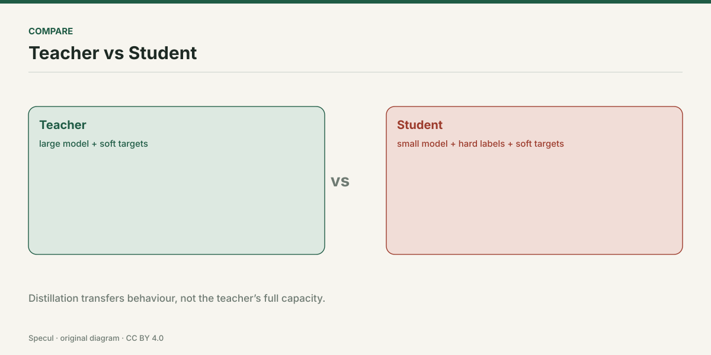

知识蒸馏Knowledge Distillation
Knowledge Distillation
用大模型的软输出训练小模型：能力保留大半，部署容易得多。Train a small model on a big model's soft outputs: keep most of the capability, deploy far more easily.
大模型带高温 softmax 输出「软目标」，小模型学这些概率分布。
通行的「教师 / 学生」叫法是后来的通俗命名。
原论文的用词是 cumbersome model 与 distilled model。
The large model emits "soft targets" via a high-temperature softmax; the small model learns those probability distributions.
The popular "teacher / student" wording is a later community name; the original paper says cumbersome model and distilled model.

你能在本地跑的小模型，不少是蒸馏产物。模型名里带 -distill 或 - distilled，多半和它有关。Many small models you can run locally are distilled products. Model names containing -distill or -distilled usually relate to this.
从业者深版：蒸馏专题（AI 模型站）Practitioner deep-dive: distillation (AI Models site) ↗
回到名词地图看第4段的其他 60 个词 →Back to the map: the other 60 terms in stage 4 →
别停在定义：去任务手册看按什么顺序做、验收什么；或者按你手头的任务，筛 3 个工具候选。Don’t stop at the definition: use the task handbook for the order and checks, or filter three tool candidates for the job at hand.
任务手册 →Task handbooks → · 按任务筛 3 个候选 →Filter three candidates →